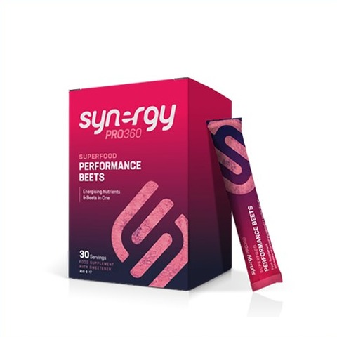

Here's a personalised look at what your answers reveal, and where to focus first.
A quick read of where you stand today. The full detail — every pathway, food and body system — follows below.
The things your answers point to most clearly.
Chosen at the start of the questionnaire.
Your goal of Mental Clarity & Performance Sharpness lines up with your Circulatory System priority.
Each score is out of 100 — the higher it is, the more your answers suggest that system could benefit from dietary support.
Every body system your answers have flagged, shown together.
Many people use nutritional supplementation to help close everyday gaps in their diet, particularly where getting enough of a specific nutrient through food alone can be difficult. Supplementation isn't a substitute for a varied, balanced diet — it's simply one more tool that research suggests can help support the areas your results have highlighted. Based on your answers, here's the product our engine identified as the closest match for you:

Recommended based on your own results — it targets Circulatory System and Respiratory System, flagged as priority areas in your results. Its strongest matched pathways are Supports Endothelial Function and Supports Nitric Oxide Production, identified from your questionnaire answers.
Alongside your recommended product, this bundled Synergy program is worth considering too:
A focused Synergy program built specifically for Mental Clarity & Performance Sharpness, one of your selected goals.
The nutritional pathways doing the most work for your top priorities, ranked strongest first.
Scored out of 100 on how well each food matches your key mechanisms.
The plant compounds doing the most work behind your key mechanisms.
The vitamins & minerals your answers point to most strongly.
These foods have been prioritised because they best support the highest-scoring clinical mechanisms identified in your assessment.
Barley is a wholegrain cereal notable, like oats, for its beta-glucan soluble fibre content. It has an established evidence base and an EFSA-authorised health claim relating to cholesterol reduction.
Bile acid binding is one of the best understood mechanisms by which fibre-rich foods contribute to long-term cardiovascular and metabolic wellbeing.
Describes prebiotic effects, where fermentable fibres and related compounds selectively nourish beneficial bacteria in the gut.
A broader mechanism covering the range of ways foods and compounds can influence cholesterol synthesis, absorption and clearance to support a healthy overall lipid profile.
Beetroot is a root vegetable notable for its high dietary nitrate content, which the body converts into nitric oxide, a molecule involved in blood vessel dilation. This has made beetroot one of the most researched veg...
Describes support for the health of the endothelium, the thin layer of cells lining blood vessels that regulates vascular tone, clotting and inflammation.
Covers compounds that support the body's production of nitric oxide, a signalling molecule that relaxes blood vessels and improves blood flow.
Bile acid binding is one of the best understood mechanisms by which fibre-rich foods contribute to long-term cardiovascular and metabolic wellbeing.
Oats (*Avena sativa*) are one of the world's most extensively researched wholegrains and are recognised as one of the healthiest staple foods available. They are naturally rich in complex carbohydrates, soluble fibre,...
Bile acid binding is one of the best understood mechanisms by which fibre-rich foods contribute to long-term cardiovascular and metabolic wellbeing.
Describes prebiotic effects, where fermentable fibres and related compounds selectively nourish beneficial bacteria in the gut.
A broader mechanism covering the range of ways foods and compounds can influence cholesterol synthesis, absorption and clearance to support a healthy overall lipid profile.
These are the areas where your questionnaire suggests nutrition is likely to have the greatest overall impact. They are not diagnoses, but practical priorities to help guide your food choices.
Your answers suggest this is one of the areas most likely to benefit from consistent dietary support. The pathways below explain why these foods were prioritised.
Describes support for the health of the endothelium, the thin layer of cells lining blood vessels that regulates vascular tone, clotting and inflammation.
Covers effects that support a varied population of beneficial bacterial species within the gut microbiome, associated with better overall gut health.
Describes prebiotic effects, where fermentable fibres and related compounds selectively nourish beneficial bacteria in the gut.
Your answers suggest this is one of the areas most likely to benefit from consistent dietary support. The pathways below explain why these foods were prioritised.
Describes support for the health of the endothelium, the thin layer of cells lining blood vessels that regulates vascular tone, clotting and inflammation.
Covers effects that support a varied population of beneficial bacterial species within the gut microbiome, associated with better overall gut health.
Describes prebiotic effects, where fermentable fibres and related compounds selectively nourish beneficial bacteria in the gut.
Your answers suggest this is one of the areas most likely to benefit from consistent dietary support. The pathways below explain why these foods were prioritised.
Covers effects that support a varied population of beneficial bacterial species within the gut microbiome, associated with better overall gut health.
Describes prebiotic effects, where fermentable fibres and related compounds selectively nourish beneficial bacteria in the gut.
Covers the fermentation of fibre by gut bacteria into short-chain fatty acids such as butyrate, which nourish colon cells and support gut health.
These naturally occurring plant compounds have been prioritised because they support several of your highest-scoring nutritional pathways.
A natural soluble fibre found mainly in oats and barley that supports heart, digestive and metabolic health.
Describes prebiotic effects, where fermentable fibres and related compounds selectively nourish beneficial bacteria in the gut.
Covers the fermentation of fibre by gut bacteria into short-chain fatty acids such as butyrate, which nourish colon cells and support gut health.
Describes support for the intestinal lining, which controls what passes from the gut into the bloodstream and helps prevent unwanted substances from crossing the gut wall.
Beta-glucan is a soluble dietary fibre found primarily in oats and barley. It forms a gel-like substance within the digestive tract, slowing digestion and helping reduce LDL cholesterol while supporting healthy blood glucose regulation. It also acts as a fermentable fibre, encouraging production of beneficial short-chain fatty acids by the gut microbiome.
A fruit fibre that helps support healthy digestion, beneficial gut bacteria and cholesterol balance.
Describes prebiotic effects, where fermentable fibres and related compounds selectively nourish beneficial bacteria in the gut.
Covers the fermentation of fibre by gut bacteria into short-chain fatty acids such as butyrate, which nourish colon cells and support gut health.
Describes support for the intestinal lining, which controls what passes from the gut into the bloodstream and helps prevent unwanted substances from crossing the gut wall.
Pectin is abundant in apples, citrus fruits and many berries. It functions as a fermentable soluble fibre, helping beneficial intestinal bacteria thrive while also slowing digestion and contributing to healthy blood lipid levels.
A powerful plant compound from broccoli and related vegetables that activates the body's natural defence systems.
Describes effects, often from soluble fibre forming a viscous gel, that slow the rate at which glucose from food is absorbed into the bloodstream.
Covers effects that improve how effectively cells respond to insulin, supporting more efficient blood glucose uptake.
Describes broader effects on the steadiness of energy availability throughout the day, linked to stable blood glucose and metabolic function.
Sulforaphane is produced when broccoli, broccoli sprouts and related vegetables are chopped or chewed. It is one of the most extensively studied plant bioactives and is recognised for supporting antioxidant defence, cellular resilience and normal detoxification processes.
Based on your own results, these Synergy products target the nutritional pathways scored highest for you.
A beet-based performance drink combining red beet's nitric-oxide-boosting nitrates with two blends of polyphenol-rich superfood plants, plus vitamins and minerals, intended to support vitality, recovery, mental acuity, and healthy blood pressure.
Describes support for the health of the endothelium, the thin layer of cells lining blood vessels that regulates vascular tone, clotting and inflammation.
Covers compounds that support the body's production of nitric oxide, a signalling molecule that relaxes blood vessels and improves blood flow.
Describes prebiotic effects, where fermentable fibres and related compounds selectively nourish beneficial bacteria in the gut.
A beet-based performance drink combining red beet's nitric-oxide-boosting nitrates with two blends of polyphenol-rich superfood plants, plus vitamins and minerals, intended to support vitality, recovery, mental acuity, and healthy blood pressure.
An energising blend of L-arginine and amino acids with B-vitamins and natural caffeine sources to support normal energy-yielding metabolism and reduce tiredness and fatigue.
Describes support for the health of the endothelium, the thin layer of cells lining blood vessels that regulates vascular tone, clotting and inflammation.
Covers compounds that support the body's production of nitric oxide, a signalling molecule that relaxes blood vessels and improves blood flow.
Covers effects that support healthy blood flow to the brain, supplying the oxygen and nutrients needed for normal cognitive function.
An energising blend of L-arginine and amino acids with B-vitamins and natural caffeine sources to support normal energy-yielding metabolism and reduce tiredness and fatigue.
Synergy's flagship L-arginine complex, combining L-arginine and L-citrulline with vitamins C, D3, K, B6 and B12 to support normal energy metabolism, immune function and blood vessel health.
Describes support for the health of the endothelium, the thin layer of cells lining blood vessels that regulates vascular tone, clotting and inflammation.
Covers compounds that support the body's production of nitric oxide, a signalling molecule that relaxes blood vessels and improves blood flow.
Covers effects that support healthy blood flow to the brain, supplying the oxygen and nutrients needed for normal cognitive function.
Synergy's flagship L-arginine complex, combining L-arginine and L-citrulline with vitamins C, D3, K, B6 and B12 to support normal energy metabolism, immune function and blood vessel health.